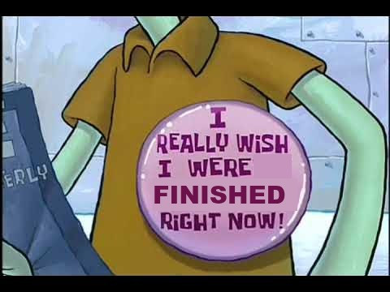

© Paramount Media Networksaleph diallo is badbunsen,
a graphic designer, illustrator, cartoonist and amateur animator from brooklyn.
he is currently a teenage student majoring in graphic design.
aleph also enjoys making websites in his spare time. this is one such site.
you can shoot him an email, if you'd like: sayhi at badbunsen dot com
not to be confused with: bad bunny, bunsen and beaker, bunsen is a beast, so on.
below are some links to pages on the site. feel free to explore...
* = under construction
portfolio*
(for clients)
characters*
(that I made)
socials
(other places where i create stuff online)


< no ai webring (rnd) >
(unless noted) all graphics © aleph diallo. all lefts, rights and wrongs reserved.
this site is best viewed on a desktop. mobile will work somewhat, but a desktop is much more optimal